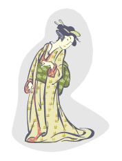
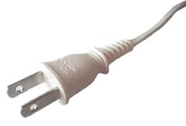

טיול ליפן אפריל 2014
שלום רב,
בחרתם לצאת ולתור את "ארץ השמש העולה", הלא היא יפן.
מרגע נחיתתכם באי הונשו – שהוא האי הגדול מבין ארבעת איי יפן העיקריים, תבינו שיפן היא לא רק "סוני", "טיוטה", "מיצובישי" וכו' אלא מדינה מרתקת, יפה ומגוונת.
ההתרגשות לקראת הנסיעה הולכת וגוברת עם התקרב מועד היציאה, ויחד עם זאת ישנן שאלות שעליהן הנכם מחכים לקבל תשובות.
מקווה שדף מידע זה יהיה לכם לעזר. אם לאחר מפגש הקבוצה וקריאת המידע המובא כאן תתעוררנה שאלות, הרגישו חופשיים ליצור עמי קשר עוד בטרם היציאה לטיול. אשתדל לתת לכם את האינפורמציה הנדרשת.
להלן מספרי הטלפון שלי –
בית – 09-7425733
נייד – 052-2231525
מזג אויר – אביבי – (כדאי ורצוי לבדוק באינטרנט לפני היציאה לטיול)
מטבע מקומי – יין (JPY )
שער חליפין –
1$= 102.3 יין
1ש"ח=29.41 יין
(שער ההמרה נכון ל – 9/4/2014)
הוצאה יומית לאדם – כ- 25$
בבתי עסק ובבתי המלון ניתן להשתמש בכרטיסי אשראי.
הפרשי השעות בין ישראל ליפן – 6+ (יפן מקדימה את ישראל ב – 6 שעות).
תקשורת – הקידומת ליפן היא 81
טלפון מיפן לארץ: קוד גישה בינלאומי; JDC 001;KDD 0041;JT 0061 +972 +קידומת האזור בלי "0"' +מספר הטלפון.
לבעלי סמארט פון ממליצה להוריד את התוכנה BPHON של בזק. (רק בעלי קו בזק בביתם יכולים להוריד תוכנה זו).
ביפן ניתן להשתמש רק בפלפונים מהדור השלישי ומעלה.
תקשורת אינטרנטית ברוב בתי המלון.

חשמל – הספק – 100V .כך נראה תקע יפאני ולו יש להתאים מעביר.
לבוש וציוד – בגדים מתאימים למזג האויר. נכון לימים אלה הטמפ' היא בסביבות 20+ מעלות במהלך היום.יש להביא מעיל ,צעיף,מטריה, נעלי הליכה נוחות, נעלים להחלפה.
שימו לב – בביקור בהר קויה עשוי להיות קר יותר מאשר ביתר חלקי הטיול.
קרם הגנה
משקפי קריאה רזרביים
משקפי שמש
תרופות – לעזרה ראשונה, כמו קולדקס, סטופ איט, דקסמול ומעורר פעולת מעים.
צילום של הדרכון ושל כרטיס הטיסה.
באם יש לך ספור מעניין/מוסיקה טובה/ רעיון למשחק – נחמד באם גם פריטים אלה יהיו בין הדברים שהנך מביא/ה לטיול.
מזוודה – מזוודת המטען לא תעלה על 20 ק"ג לנוסע.
תיק יד – (מזוודת יד) – כדאי ורצוי לארוז חליפת בגדים ובגדים תחתונים;תרופות לשימוש יום יומי.
בתיק היד ניתן להכניס מיכלים שהתכולה שלהם לא עולה על 50 מ"ל. אנא הקפידו על גודל זה.
כמו כן יש להוציא כל מכשיר חד מתיק היד.
מבקשת מכל חברי הקבוצה להגיע ביום רביעי ה- 16/4/2014 בשעה 09:30 לשער מס' 32 שבשדה התעופה. אודה לכולם באם תעמדו בלוח זמנים זה.
רק לאחר שהודעתם לי על הגעתכם תתחילו בתהליך הצ'אק אין. את מזוודת המטען יש לשלח ישירות לטוקיו.
עלינו לזכור שהצלחת הטיול תלויה בכל אחד מאתנו. אחד הכללים החשבוים הוא עמידה בלוח זמנים !!!!
ברצוני לאחל לכם ולב"ב חג אביב צבעוני ושמח !!!
בברכה,
שרה פרי